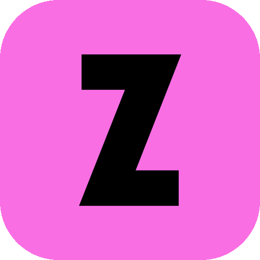
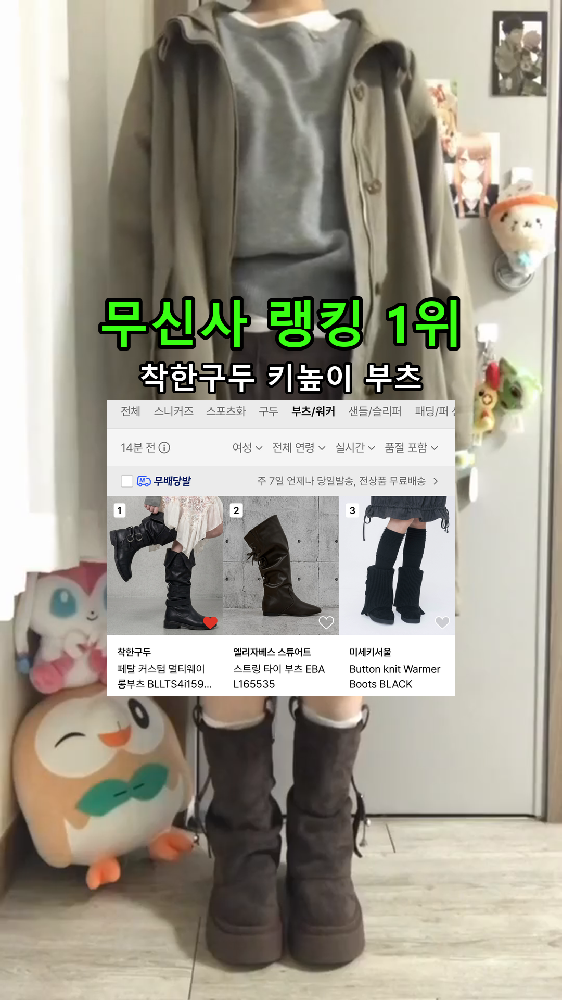
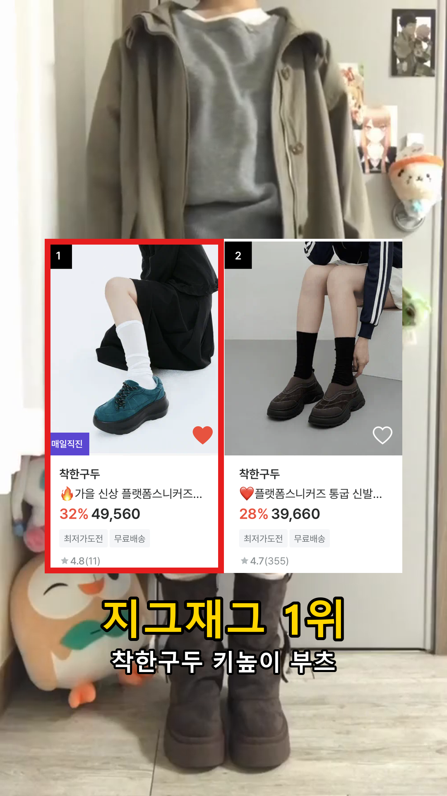
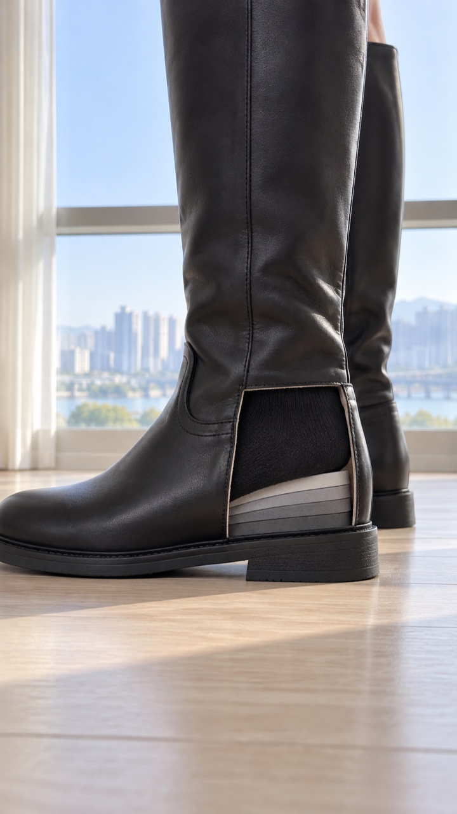
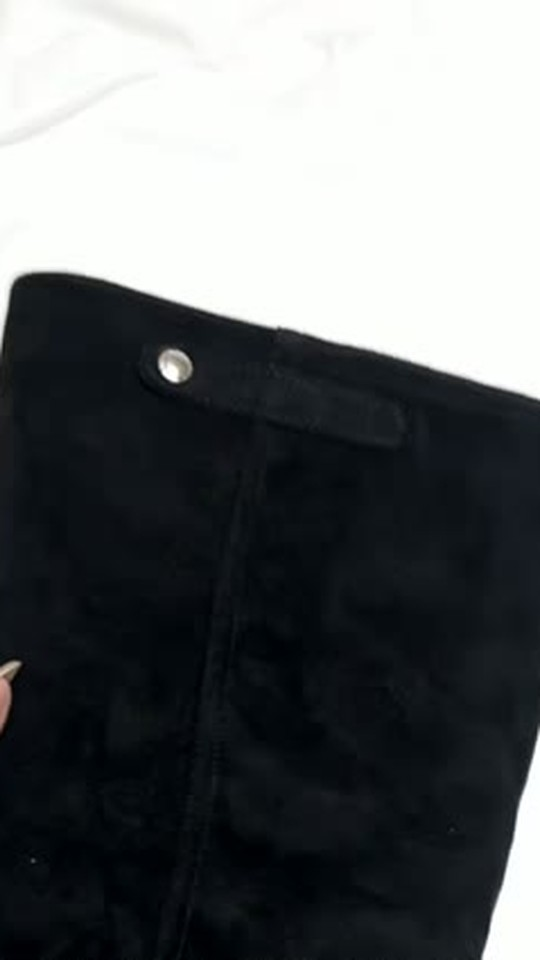
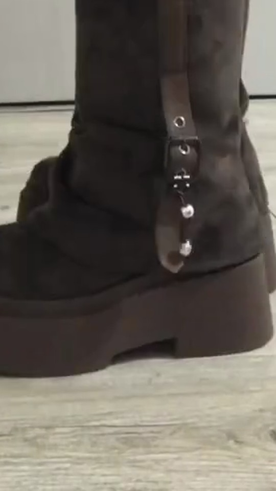
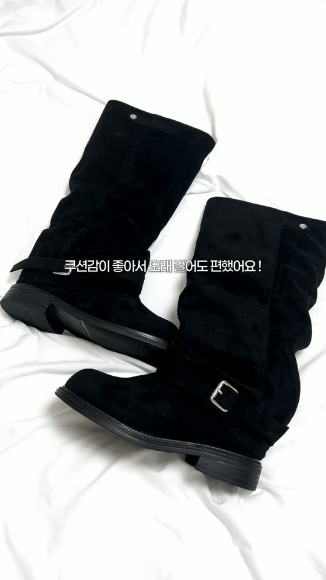
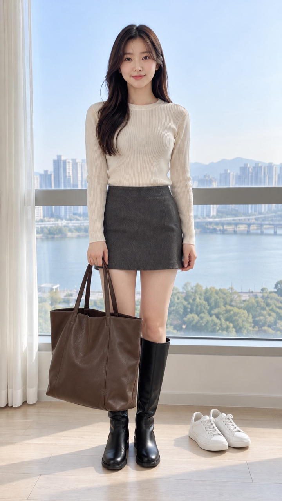

윤선님 키높이 부츠 촬영 가이드
평소 ‘daily outfit’ 영상 흐름 그대로 찍고, 부츠만 더 자주·가까이 보여 주세요. 아래 5장면, 20초 안팎이면 돼요.
제품놀킨으로 진행해요
서울 마포구 양화로 125 5층 착한구두 / 받는 분 콘텐츠기획 / 010-5595-5342
거울 쪽으로 걸어 들어오기
참고영상 1의 첫 장면을 그대로 찍어 주세요.
구도전신 거울 앞, 폰을 얼굴 앞에 들어 얼굴을 가리고 거울을 찍어요. 화면 위는 턱 아래부터, 아래는 부츠 끝까지.
움직임거울에서 두세 걸음 떨어져 시작해, 거울 쪽으로 천천히 걸어 들어와요. 끝날 때쯤 부츠가 화면 아래쪽에 크게 오면 돼요. 컷 없이 한 번에 3초.
썸네일 글자 · 0초부터 · 화면 가운데키 자리에는 ‘평소 키 → 평소 키 + 7.5’를 적어 주세요. 예: 158 → 165.5cm. 이 장면이 썸네일이 돼요.
글꼴·글자 색·크기는 자유예요. 내용과 위치(화면 가운데, 0초부터)만 맞춰 주세요.
무신사·지그재그 중 담당자가 알려드린 하나만 넣어 주세요. 지그재그면 로고와 ‘지그재그 1위’로 바꾸면 돼요.
로고 원본


가까이 앞에서, 그리고 옆모습
앞에서 2초거울에 가까이 서서 허리 아래만. 부츠가 화면 아래쪽 가운데에 오게.
옆에서 2초몸을 옆으로 돌려 전신 옆모습. 굽과 발목 라인이 보이게.
자막 예시이어서 랭킹 사진 1장2초
서 있는 모습을 2초 더 찍고, 그 위에 담당자가 알려드린 랭킹 사진 1장(무신사 또는 지그재그)을 예시처럼 크게 넣어 주세요. 썸네일에 넣은 쪽과 같은 곳이면 돼요.




안쪽 굽, 겉모습을 가까이

단면 2초보내드린 단면 샘플을 바닥에 세워 주세요. 폰을 옆에 낮게 두고, 잘린 면이 화면 가운데 크게 오면 돼요.
디테일 3초이어서 본품을 손에 들고 질감 → 굽 → 버클이나 주름을 1초씩 보여 주세요.



본품은 자르거나 안창을 빼지 마세요.
자막 예시다시 걸어오고, 대각선으로 가까이
걷기 2초첫 장면처럼 거울 쪽으로 한 번 더 걸어와요. 걸을 때 부츠가 화면 아래쪽에 계속 보이게.
대각선 2초거울 앞에서 몸을 살짝 틀고 폰을 조금 낮춰 허리 아래만. 부츠 옆라인이 화면 가운데에 오게.
자막 예시서서 마무리, 댓글 안내
거울 앞에 서서 허리 아래부터 부츠 끝까지 3초. 구도 참고.
화면에 넣을 글자링크 보내드릴게요
○○는 담당자에게 받은 댓글 키워드로 바꿔 주세요. 글꼴·색은 자유예요.
신발만 보이는 정지 컷 · 2~3초
광고로 썼을 때 반응이 가장 좋았던 구도예요. 영상 중간이나 끝에 2~3초만 넣어 주시고, 이 컷은 자막·음악 없는 원본으로도 따로 보내 주세요. 둘 중 하나면 충분해요. 아래 영상은 광고 장면이라 구도만 참고해 주세요.
이것만 빼 주세요

얼굴 드러내기 — 첫 장면은 참고영상처럼 폰으로 얼굴을 가려 주세요.
부츠 가리기 — 가방·손·소품이 부츠 앞을 가리지 않게 해 주세요.
언박싱 장면 넣기 — 상자 열기·포장 뜯기는 빼 주세요. 첫 장면부터 부츠를 신은 모습으로 시작해요.
다른 신발 브랜드 이름·로고·상자, 유명인 이름, 저작권 음원은 넣지 않아요.
촬영 전 준비
준비물 · 촬영 전 연락
- 놀킨 사이즈를 알려 주세요. 단면 샘플도 함께 보내드려요.
- 전신 거울, 부츠가 잘 보이는 코디 한 벌을 준비해 주세요. 정지 컷용 폰 받침대가 있으면 좋아요.
- 촬영 전에 이 가이드 보시고 어떻게 찍으실지 간단히(글 몇 줄이나 말로) 먼저 보내 주세요. 따로 쓰시는 기획안 양식이 있으면 그걸로 주셔도 돼요. 확인하고 바로 답드릴게요.
- 초안 전달 날짜·게시 날짜·댓글 키워드도 확인해 주세요.
연락은 이 가이드를 받은 대화방으로 주세요.